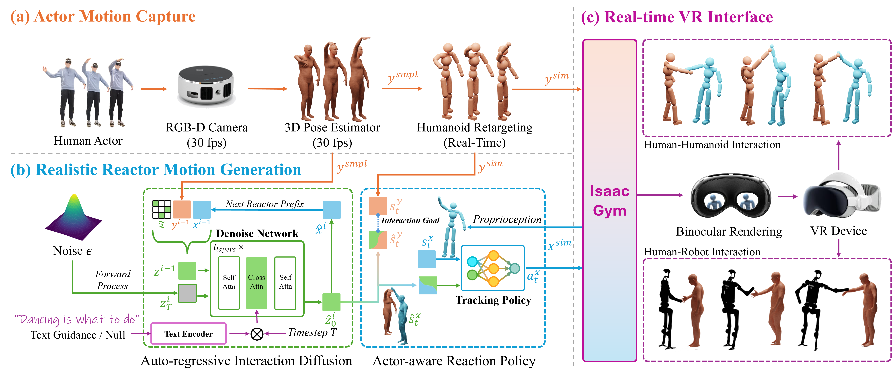
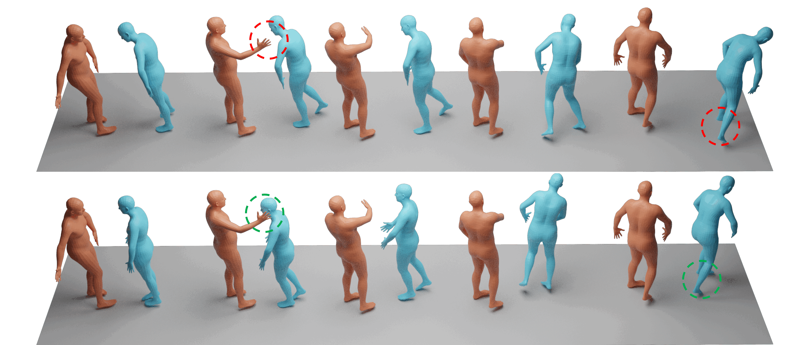
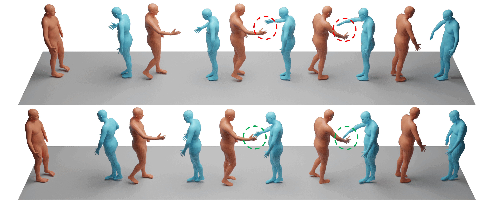
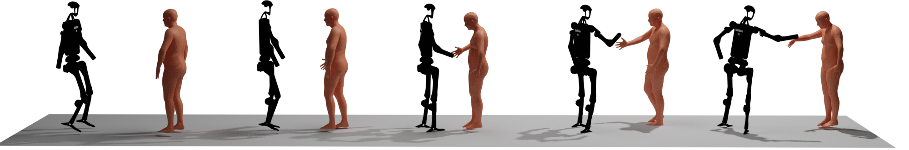

Real-time synthesis of physically plausible human interactions remains a critical challenge for immersive VR/AR systems and humanoid robotics. While existing methods demonstrate progress in kinematic motion generation, they often fail to address the fundamental tension between real-time responsiveness, physical feasibility, and safety requirements in dynamic human-machine interactions. We introduce Human-X, a novel framework designed to enable immersive and physically plausible human interactions across diverse entities, including human-avatar, human-humanoid, and human-robot systems. Unlike existing approaches that focus on post-hoc alignment or simplified physics, our method jointly predicts actions and reactions in real-time using an auto-regressive reaction diffusion planner, ensuring seamless synchronization and context-aware responses. To enhance physical realism and safety, we integrate an actor-aware motion tracking policy trained with reinforcement learning, which dynamically adapts to interaction partners’ movements while avoiding artifacts like foot sliding and penetration. Extensive experiments on the Inter-X and InterHuman datasets demonstrate significant improvements in motion quality, interaction continuity, and physical plausibility over state-of-the-art methods. Our framework is validated in real-world applications, including virtual reality interface for human-robot interaction, showcasing its potential for advancing human-robot collaboration.



